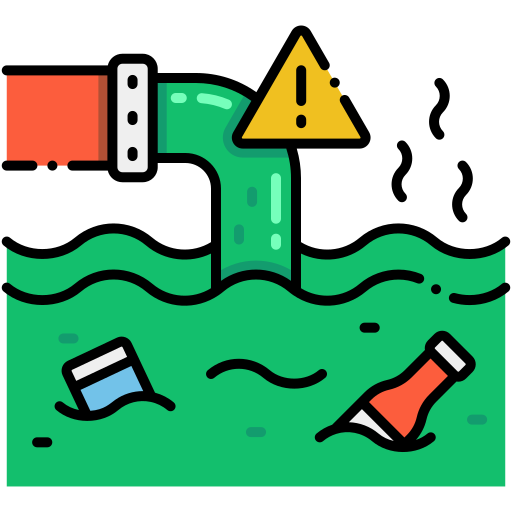
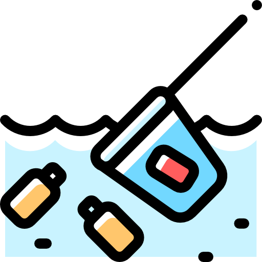

 AquaCare Fighting water-pollution 
Introduction
Water pollution refers to the contamination of bodies of water, such as rivers, lakes, oceans, and groundwater, by various harmful substances that degrade the quality of the water and harm the organisms that depend on it. This environmental issue is a significant concern worldwide, as clean and accessible water is essential for the well-being of both humans and ecosystems.
Water pollution can result from a variety of sources, including industrial activities, agricultural runoff, sewage discharge, and improper waste disposal. These sources introduce pollutants like chemicals, heavy metals, pathogens, nutrients, and organic matter into water bodies. The consequences of water pollution are far-reaching and can lead to detrimental effects on aquatic life, human health, and the environment as a whole.
Water pollution poses a serious threat to the balance of aquatic ecosystems, as it can disrupt food chains, harm aquatic organisms, and damage the habitats they rely on. Additionally, when polluted water is used for drinking, it can lead to health problems for humans, including waterborne diseases and long-term exposure to toxic substances.
Efforts to address water pollution involve various strategies, including regulations and policies aimed at reducing discharges from point and non-point sources, wastewater treatment, and public awareness campaigns to promote responsible water use and conservation. Ultimately, safeguarding water quality is essential for sustaining life and maintaining the health of our planet.
ABOUT WATER POLLUTION
Water pollution refers to the contamination of bodies of water, such as rivers, lakes, oceans, and groundwater, by various harmful substances that degrade the quality of the water and harm the organisms that depend on it. This environmental issue is a significant concern worldwide, as clean and accessible water is essential for the well-being of both humans and ecosystems.
Water pollution can result from a variety of sources, including industrial activities, agricultural runoff, sewage discharge, and improper waste disposal. These sources introduce pollutants like chemicals, heavy metals, pathogens, nutrients, and organic matter into water bodies. The consequences of water pollution are far-reaching and can lead to detrimental effects on aquatic life, human health, and the environment as a whole.
Water pollution poses a serious threat to the balance of aquatic ecosystems, as it can disrupt food chains, harm aquatic organisms, and damage the habitats they rely on. Additionally, when polluted water is used for drinking, it can lead to health problems for humans, including waterborne diseases and long-term exposure to toxic substances.
Efforts to address water pollution involve various strategies, including regulations and policies aimed at reducing discharges from point and non-point sources, wastewater treatment, and public awareness campaigns to promote responsible water use and conservation. Ultimately, safeguarding water quality is essential for sustaining life and maintaining the health of our planet.

Bottles in Garbage by Lake

Water Pollution